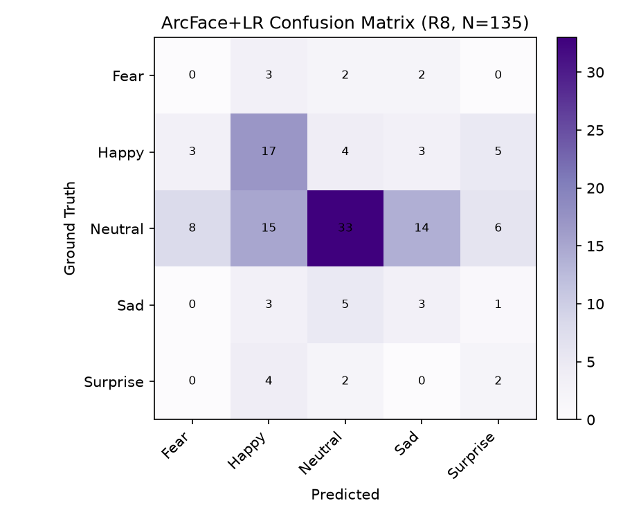
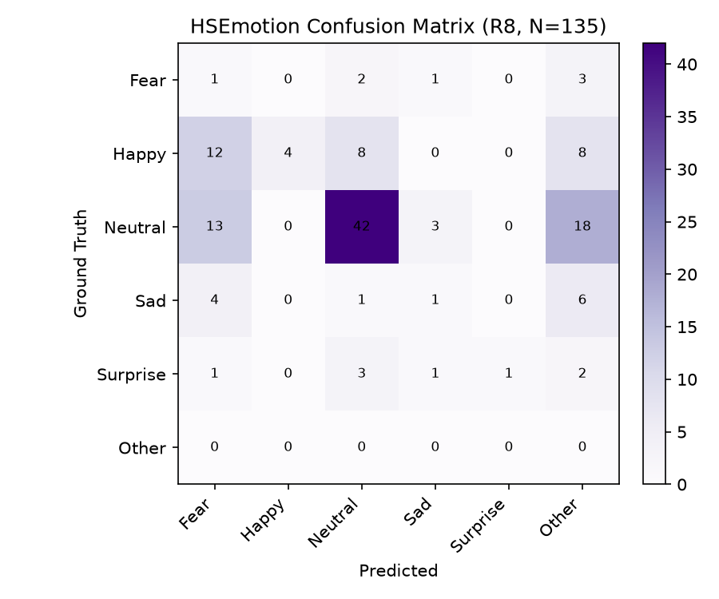
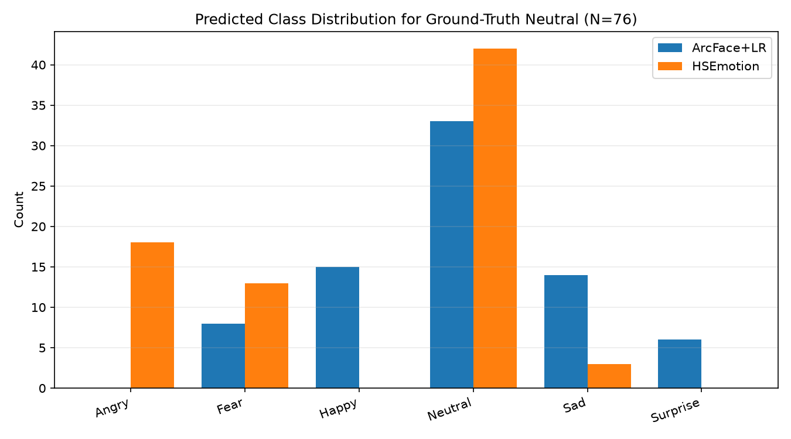
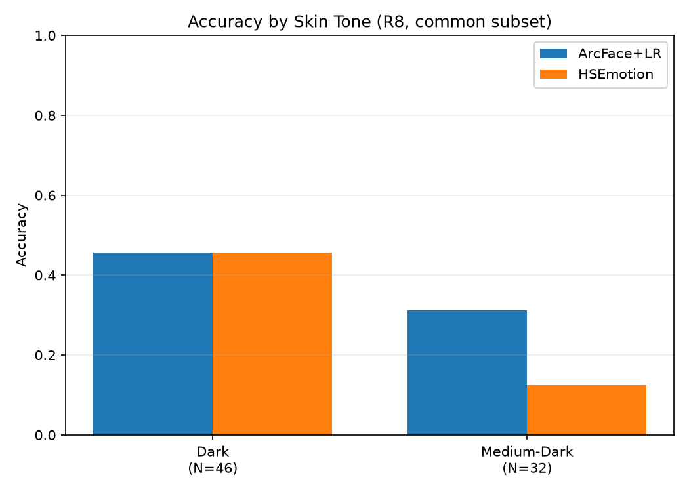

This project studies how well an off-the-shelf facial-expression recognition system works on a dark-skinned, Papuan-sourced video dataset, and tests whether a different face-representation method (ArcFace) plus a simple classifier performs differently. The source video is a documentary called "Pesta Babi."
Research Pipeline
What does this dashboard show?
Dataset
How the labeled dataset was built, and how many samples are usable at each stage.
From video to usable samples
Not every detected face could be used. Some face crops could not be matched to a clean facial outline a second time (needed to prepare them for ArcFace), and some labels were marked Ambiguous by the human reviewer (not a usable expression label).
Number of Samples per Expression (final comparison set)
Why are Angry and Disgust missing?
How the System Works
Two systems are compared: the existing baseline, and the proposed approach.
HSEmotion
Video → Frame extraction → Face detection → HSEmotion predicts the expression directly from the face image → Human reviewer checks the label → Facial landmark / skin-tone analysis.
What is HSEmotion?
ArcFace + Logistic Regression
Face crop → Face alignment → ArcFace turns the face into 512 numbers → Logistic Regression uses those numbers to predict the expression.
What is ArcFace? What is Logistic Regression?
Logistic Regression is a simple, well-understood classification method. It takes those 512 numbers and learns to predict which expression they most likely represent.
ArcFace is not the expression classifier — it only prepares the numbers that Logistic Regression then uses.
Baseline Results — HSEmotion
Two different sample groups are reported below. They must not be mixed together.
227 samples
| Accuracy | |
| Wrong "Angry" guesses | |
| Neutral faces called "Angry" |
This is HSEmotion's performance across the entire labeled dataset.
135 samples, 5 expression groups
| Accuracy | |
| Precision (average) | |
| Recall (average) | |
| F1 (average) |
This is HSEmotion measured only on the smaller, fair comparison group used against ArcFace.
What does "Accuracy" mean? What is "Precision", "Recall", "F1"?
Precision — when the system predicts a certain expression, how often it is actually right.
Recall — of all faces that truly show a certain expression, how many the system actually found.
F1 — a single score that balances Precision and Recall together.
Macro (e.g. "Macro F1") means each expression group counts equally, even if some groups have far fewer samples than others.
ArcFace Results
Frozen ArcFace (model: w600k_r50) turns each face into 512 numbers; Logistic Regression predicts the expression from those numbers.
ArcFace converts each face into a set of numbers that describe the face. A simple classifier (Logistic Regression) then uses those numbers to predict the expression.
View evidence
reports/arcface_evaluation/comparison_metrics.csv · Model:
frozen buffalo_l / w600k_r50 ArcFace embedding (512 numbers, standardized) →
multinomial Logistic Regression, evaluated with grouped cross-validation so no face is
ever tested by a version of the model that already saw it during training.
Model Comparison
Both systems measured on the exact same 135 samples.
| ArcFace + Logistic Regression | HSEmotion |
|---|
Was the difference real, or could it be chance?
ArcFace had higher measured accuracy, but this statistical test did not show a clear difference between the two models on this group of samples.
What does this mean? / View evidence
Experiment: EXP-007 · Source:
reports/arcface_evaluation/statistical_tests.csv
Error Analysis
Where each system's predictions were wrong, by expression group.
How often each expression was predicted wrong
ArcFace — Prediction Comparison (Confusion Matrix)

Rows = correct label, columns = what the model predicted.
HSEmotion — Prediction Comparison (Confusion Matrix)

"Other" = predictions outside the 5 shared groups (mostly Angry).
View evidence
reports/arcface_error_analysis/overall_error_analysis.csv,
confusion_matrix_arcface.png, confusion_matrix_hsemotion.png
Neutral Analysis
A closer look at "Neutral" faces, since this is where the most notable pattern in the baseline system was found.
| Neutral faces | |
| Correctly predicted | |
| Wrong prediction rate | |
| Most common wrong guess | |
| Neutral called "Angry" | N/A — not possible for this model |
| Neutral faces | |
| Correctly predicted | |
| Wrong prediction rate | |
| Most common wrong guess | |
| Neutral called "Angry" |
What each system guessed instead, for Neutral faces

"Neutral called Angry" is a specific, narrower number than the overall "Neutral wrong-prediction rate" above — it only counts one particular kind of mistake. For ArcFace, this specific number does not exist (N/A), because ArcFace was never given "Angry" as a possible answer (see Dataset section). This is not the same as ArcFace "solving" this problem — the comparison is simply not available for this model.
Skin-Tone Analysis
A supporting analysis: does performance look different for faces the system estimated as having different skin tones?
Samples per skin-tone group
"Unknown" means the skin-tone estimate could not be computed for that face. It is not a skin-tone group, and is left out of the accuracy comparison below.
Accuracy by Skin Tone

View evidence / statistical test
Experiment: EXP-007 / EXP-008 · Source:
reports/arcface_error_analysis/skin_tone_analysis.csv
The video source is described by the researcher as showing a Papuan community. The dataset does not record ethnicity as a formal attribute, so this dashboard cannot show a "Papuan accuracy" number — only the skin-tone-based comparison above, which is a different (and narrower) measure.
Statistical Evidence
The formal tests used to check whether the observed patterns above are likely to be real.
Model comparison
Checks whether the two models differ consistently on the same samples.
Accuracy uncertainty
ArcFace:
HSEmotion:
The range shows the uncertainty around the measured accuracy (95% confidence interval).
Skin-tone association
Checks whether the difference between the two skin-tone groups could reasonably occur by chance in this sample.
Key Findings
Based strictly on the evidence above. Separated by how confident each statement can be.
What the data shows
- ArcFace + Logistic Regression achieved higher observed accuracy (40.7%) than HSEmotion (36.3%) on the common 135-sample, 5-group evaluation.
- This difference was not statistically significant (McNemar p = 0.4614).
What the data suggests
- ArcFace and HSEmotion make different kinds of mistakes: ArcFace's Neutral mistakes spread across several other expressions, while HSEmotion's Neutral mistakes concentrate heavily on "Angry."
- HSEmotion's accuracy and skin-tone groups show a descriptive relationship in this sample.
What remains unresolved
- Whether ArcFace provides a real, reliable improvement for this population is not settled by the current sample size.
- Whether more data would change the Angry/Disgust scarcity problem is untested.
What cannot be concluded
- ArcFace is not shown to be definitively better than HSEmotion.
- ArcFace does not "solve" the Neutral→Angry mistake — that comparison is not available for this model.
- Skin tone is not shown to cause errors — only an association was observed.
- No ethnicity-specific effect (including any Papuan-specific claim) can be measured — the dataset does not record ethnicity.
- The dataset is not 100% dark-skinned — it splits into two skin-tone groups, with many samples unclassified.
Full evidence table (research-grade detail)
| Finding | Evidence | Strength |
|---|
Limitations
What should be kept in mind when reading the results above.
Show all limitations
| Limitation | Why it matters |
|---|
Research Status
| Data pipeline & dataset | Complete |
| Baseline evaluation (HSEmotion) | Complete |
| ArcFace experiment | Complete |
| Error analysis | Complete |
| Statistical validation | Complete |
| Official research question wording | Pending — thesis-author decision |
| "100% dark-skinned" description | Needs reconciliation with actual data |
| 7-expression-group evaluation | Not yet possible — needs more data |